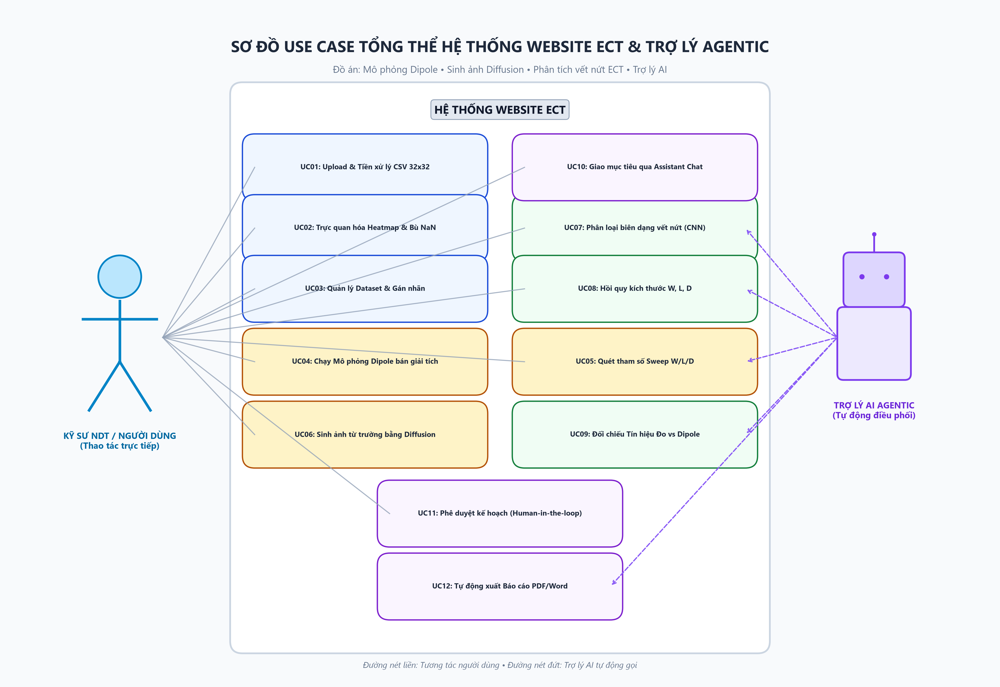
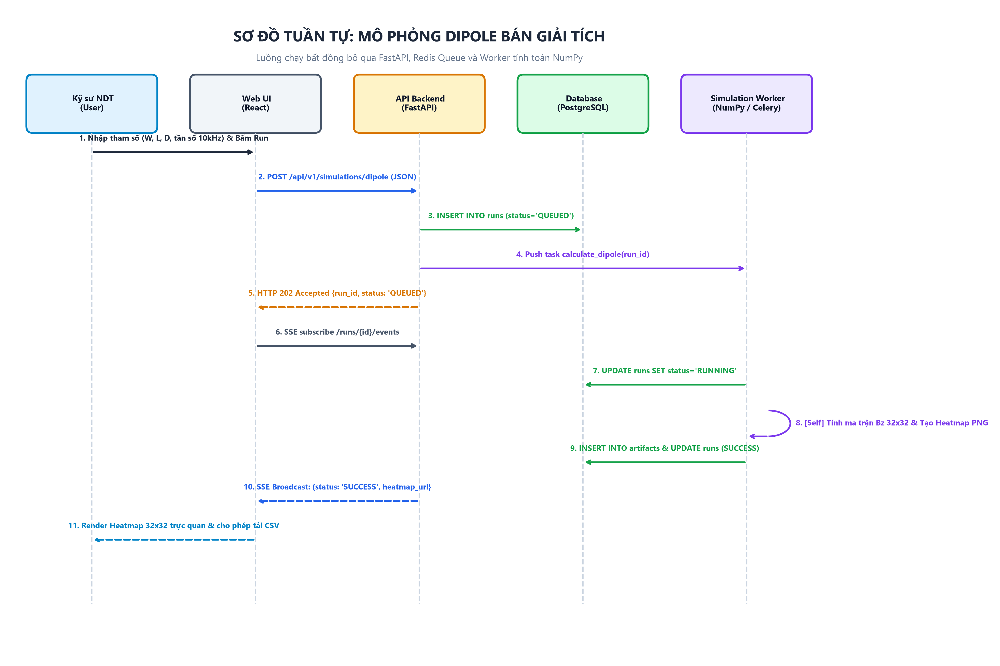
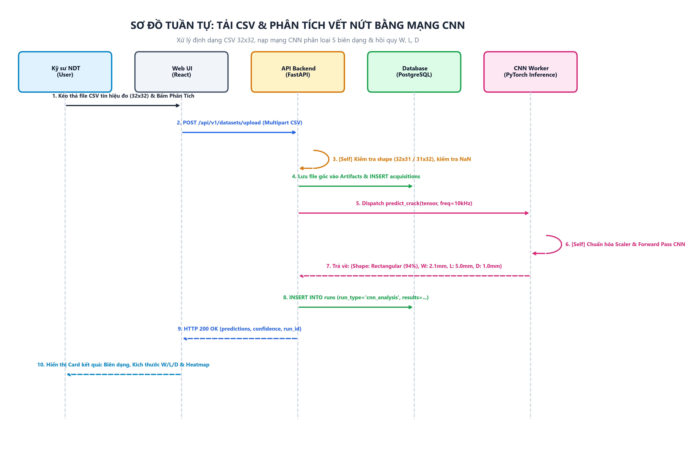
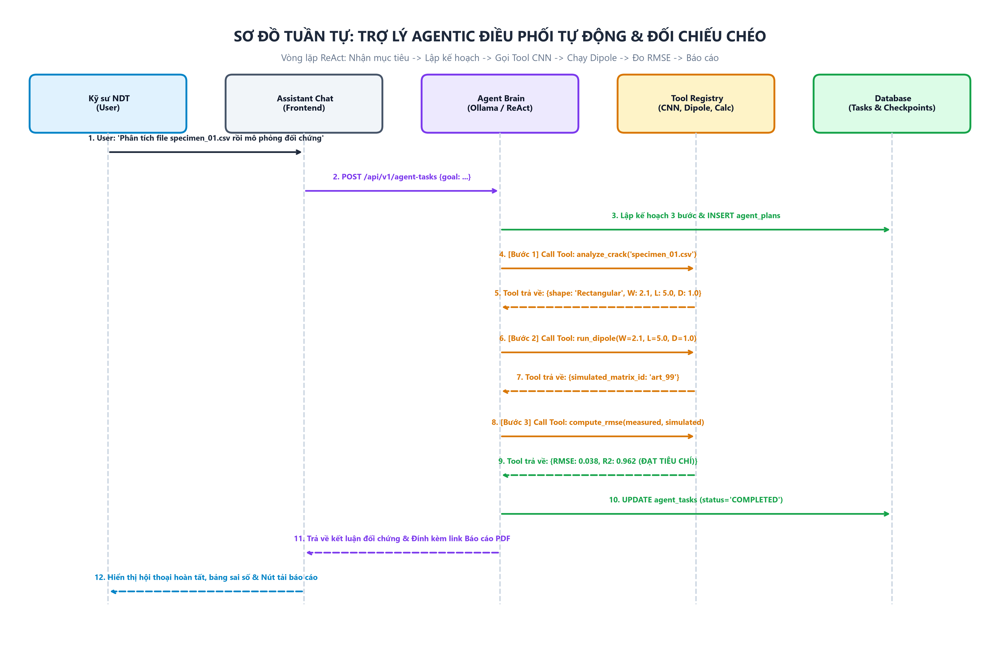
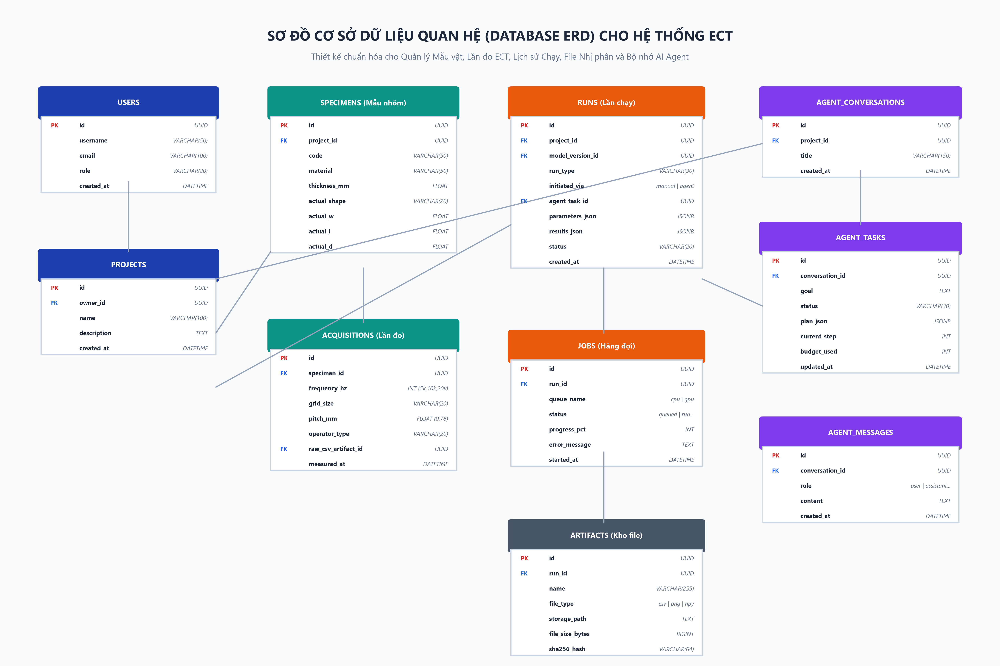

📸 Toàn bộ 5 sơ đồ chất lượng cao (300 DPI) đã được vẽ và xuất trực tiếp thành file ảnh PNG bên dưới.
Bạn có thể click chuột phải chọn "Save image as..." hoặc bấm nút "Tải ảnh PNG" để lưu vào máy và chèn thẳng vào bản Word (.docx).





SPECIMENS (Mẫu vật thí nghiệm nhôm Al7075)| Tên Cột | Kiểu Dữ Liệu | Ràng Buộc | Mô Tả & Ý Nghĩa |
|---|---|---|---|
id | UUID | PK | Định danh duy nhất của mẫu vật |
project_id | UUID | FK NOT NULL | Thuộc dự án nghiên cứu nào |
code | VARCHAR(50) | UNIQUE, NOT NULL | Mã mẫu (VD: AL7075_SAMPLE_01) |
material | VARCHAR(50) | DEFAULT 'Al7075' | Vật liệu dẫn điện (Al7075 dày 5mm) |
thickness_mm | FLOAT | DEFAULT 5.0 | Độ dày tấm mẫu (mm) |
actual_shape | VARCHAR(20) | NULLABLE | Biên dạng thật: Rectangular, Triangular, Ellipse, Step_R, Step_T |
actual_w | FLOAT | NULLABLE | Chiều rộng vết nứt thật W (mm) |
actual_l | FLOAT | NULLABLE | Chiều dài vết nứt thật L (mm) |
actual_d | FLOAT | NULLABLE | Độ sâu vết nứt thật D (mm) |
ACQUISITIONS (Dữ liệu đo tín hiệu thực tế)| Tên Cột | Kiểu Dữ Liệu | Ràng Buộc | Mô Tả & Ý Nghĩa |
|---|---|---|---|
id | UUID | PK | Khóa chính lần đo |
specimen_id | UUID | FK NOT NULL | Mẫu vật được đo |
frequency_hz | INTEGER | CHECK (5000, 10000, 20000) | Tần số kích thích (5k, 10k, 20k Hz) |
grid_size | VARCHAR(20) | DEFAULT '32x32' | Kích thước mảng cảm biến Hall |
pitch_mm | FLOAT | DEFAULT 0.78 | Khoảng cách giữa 2 sensor kề nhau (mm) |
operator_type | VARCHAR(20) | NOT NULL | Phép đo: diff_x (32x31), diff_y (31x32), hoặc raw_bz |
raw_csv_artifact_id | UUID | FK NOT NULL | Trỏ tới file CSV gốc trong kho lưu trữ |
RUNS (Lịch sử các lần chạy Mô phỏng / Phân tích)| Tên Cột | Kiểu Dữ Liệu | Ràng Buộc | Mô Tả & Ý Nghĩa |
|---|---|---|---|
id | UUID | PK | Khóa chính lần chạy |
run_type | VARCHAR(30) | NOT NULL | Loại: 'dipole_sim', 'crack_cnn', 'diffusion_gen', 'sweep' |
initiated_via | VARCHAR(20) | CHECK ('manual', 'agent') | Khởi tạo từ Form trực tiếp hay do AI gọi |
parameters_json | JSONB | NOT NULL | Lưu toàn bộ tham số đầu vào (W, L, D, freq, seed...) |
results_json | JSONB | NULLABLE | Lưu output (Class, W/L/D dự đoán, RMSE, R2...) |
status | VARCHAR(20) | DEFAULT 'QUEUED' | Trạng thái: QUEUED, RUNNING, SUCCESS, FAILED |
ARTIFACTS (Quản lý File & Bộ nhớ nhị phân)| Tên Cột | Kiểu Dữ Liệu | Ràng Buộc | Mô Tả & Ý Nghĩa |
|---|---|---|---|
id | UUID | PK | Khóa chính file |
run_id | UUID | FK NULLABLE | Do lần chạy nào sinh ra (nếu có) |
name | VARCHAR(255) | NOT NULL | Tên file hiển thị (VD: heatmap_run102.png) |
file_type | VARCHAR(50) | NOT NULL | Định dạng: csv, heatmap_png, tensor_npy, model_pt |
storage_path | TEXT | NOT NULL | Đường dẫn vật lý trên ổ đĩa / server |
sha256_hash | VARCHAR(64) | NOT NULL | Mã băm kiểm tra tính toàn vẹn (chống giả mạo file) |